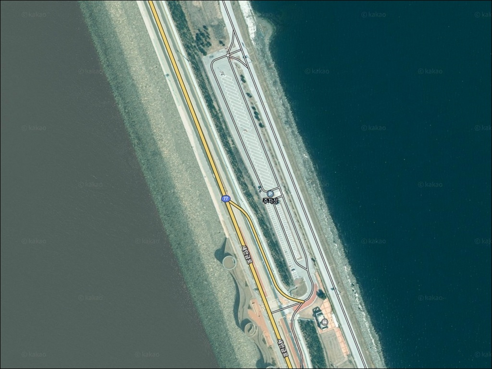
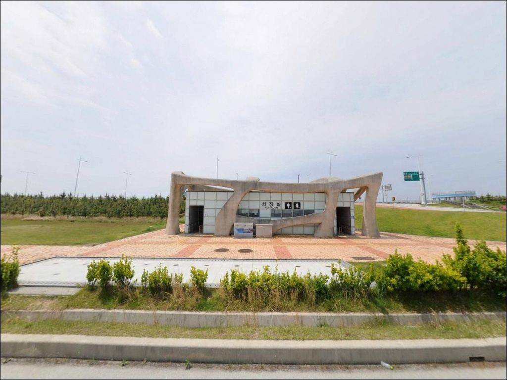
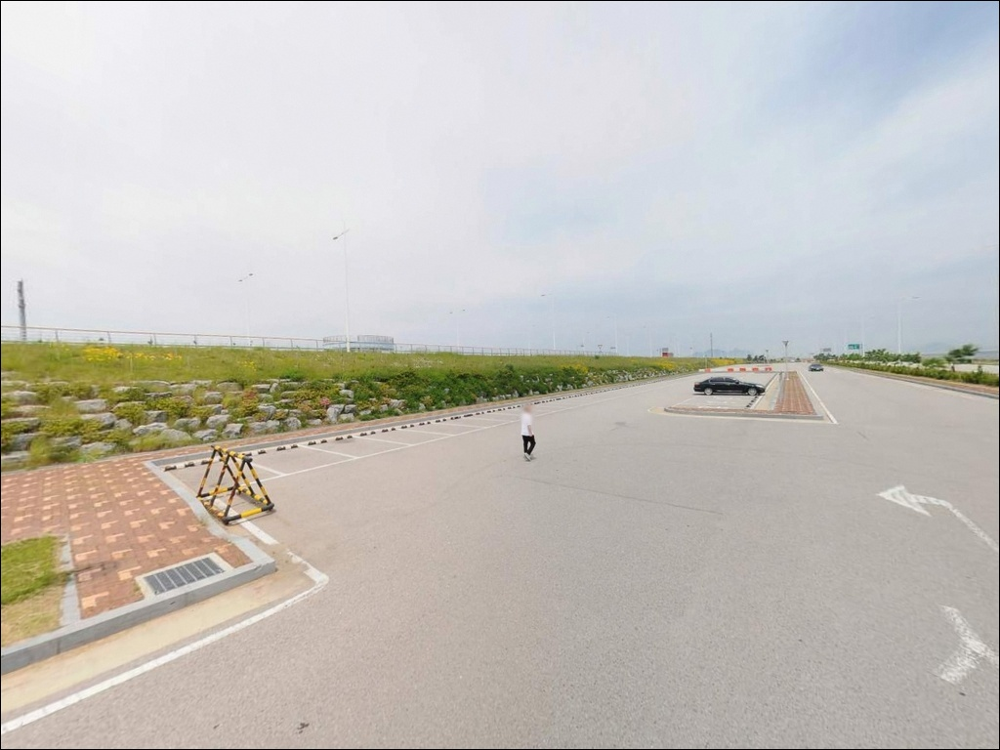
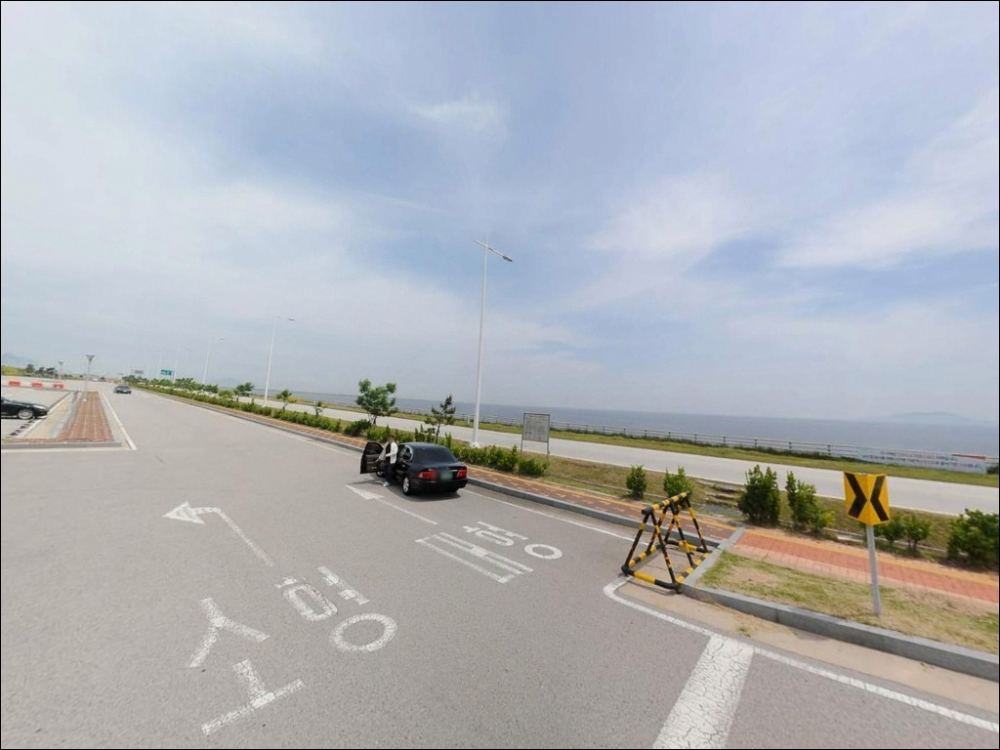
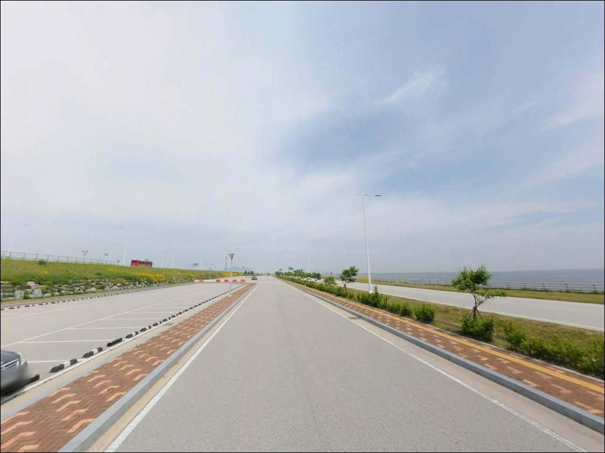
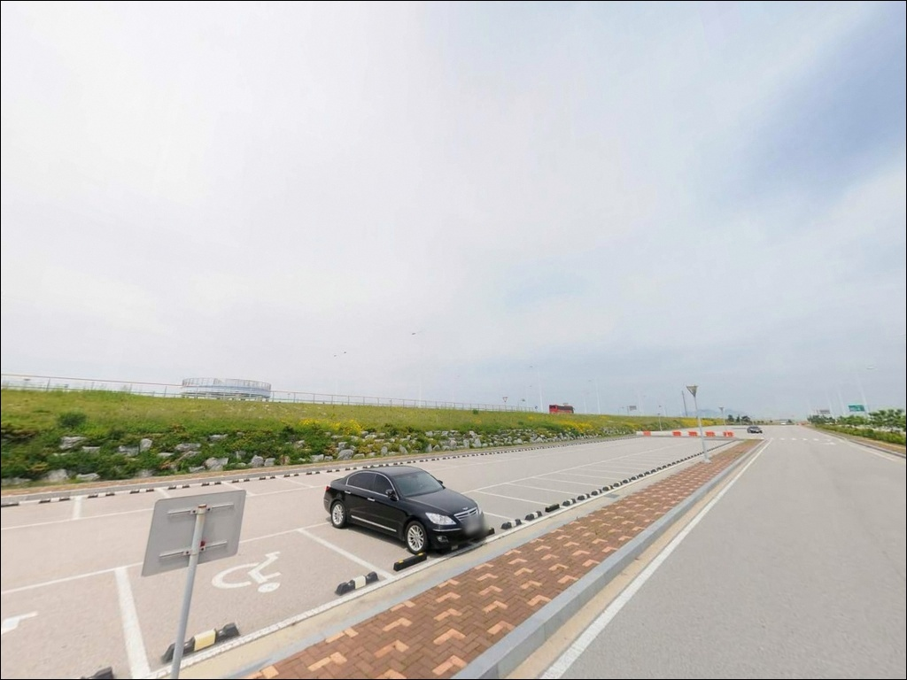
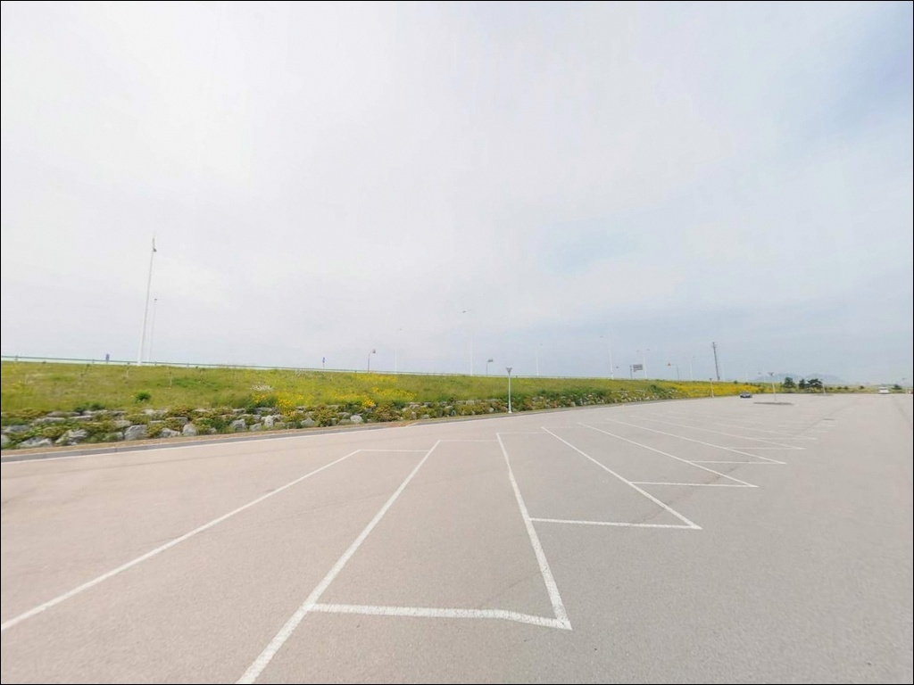
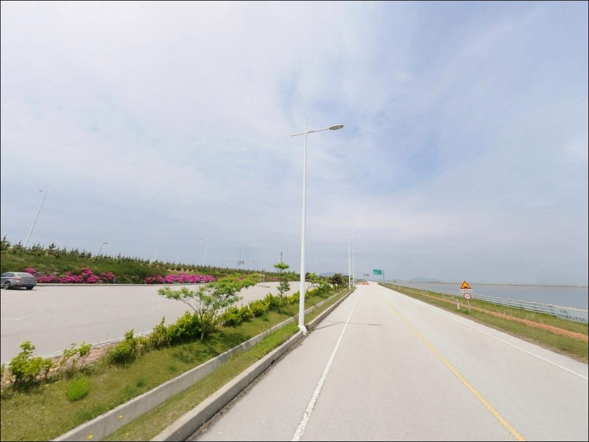
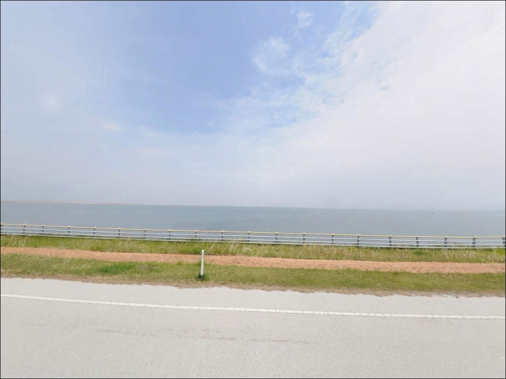

이 페이지에는 광고(제휴 링크 포함)가 있으며, 광고 링크를 통해 구매하면 운영자가 판매 수익 또는 수수료를 받을 수 있습니다. 포인트 사진: 카카오맵 스카이뷰·로드뷰. 이 페이지의 지도·사진 이미지는 카카오맵의 실제 서비스 이미지와 다를 수 있습니다.

너울쉼터
전북 김제시 진봉면 심포리 2433
새만금방조제는 주변에 바람을 막을 구조물이 없는
완전 노출형 방조제입니다.
풍속이 오르면 석축 경사면에 서 있는 것 자체가
어려워지는 구조이고,
물때를 확인하지 않고 간조 중간에 도착하면
낚시 자리 자체가 드러나 버리는 지형입니다.
너울쉼터는 새만금방조제 가력도 인근 2호 구간 석축 위에
전용 주차장과 전망대가 갖춰진 쉼터 포인트입니다.
갈치·풀치 루어낚시와 석축 루어낚시 포인트로
낚시 커뮤니티에서 반복 언급되는 곳이며,
야간 집어등 갈치낚시 거점으로도
알려져 있습니다.
이 글은 너울쉼터의 진입 환경, 석축 지형 구조,
낚시 방식별 공략 조건, 차박 체류 여건에 집중합니다.
조황 단정이나 특정 어종 보장은
이 글의 범위에 포함되지 않습니다.

너울쉼터는 새만금방조제(새만금로) 왕복 4차선 도로를
통해 접근하는 포인트입니다.
부안 방면에서는 가력도(새만금공원)를 지나,
군산 방면에서는 비응도에서 남하하여
방조제 도로를 타면 진입이 가능합니다.
포장 직선 구간이라 승용차, SUV,
캠핑 차량 모두 진입 자체에는 어려움이 없는 구조입니다.
주차는 쉼터 전용 주차장을 이용해야 합니다.
방조제 도로는 시속 80km 이상의 차량이 통행하는
고속 직선 구간으로,
갓길 주차는 안전상 절대 해서는 안 됩니다.
쉼터 주차장은 넓은 편이라
대형 차량도 회차가 가능한 구조이며,
낚시 후 차에서 대기하는 용도로도 여유가 있습니다.
낚시 자리로 이동할 때는
주차 후 석축 쪽으로 이동하는 동선을 따릅니다.
방조제 도로와 석축 사이 이동 구간은
보행 안전에 주의가 필요하며,
야간에는 헤드랜턴을 켜고 이동하는 것이 기본입니다.

너울쉼터 일대는 방조제 위 공원형 쉼터 구조입니다.
민가와 거리가 있어 프라이버시는 양호한 편이며,
야간 차량 통행도 많지 않아
조용한 분위기에서 체류가 가능한 환경입니다.
쉼터 내 가로등이 있어 주차 구역의 기본 시야는
확보되지만,
석축 쪽 해안가 방향은 조명이 제한적이어서
개인 조명 장비는 반드시 챙겨야 합니다.
바람은 이 포인트 체류에서 가장 크게 영향을 미치는 변수입니다.
새만금방조제 전 구간은 서해 바다에 직접 노출된 구조라,
특히 낮 12시 이후 강한 바람이 유입되는 경우가 많습니다.
강풍 예보 시에는 차량이 흔들릴 수 있고,
체감 온도 저하도 상당합니다.
이른 아침이나 야간에
바람이 잠잠해지는 시간대가 체류 조건이 안정됩니다.
야영이나 취사 가능 여부는 방문 전
관할 기관에서 확인이 필요합니다.
일반적으로 이 구간 방문자들은
차 안에서 대기하며 낚시하는 방식을 활용합니다.
텐트를 치는 방식은 방조제 주차장 구조에서
적합하지 않을 수 있습니다.

너울쉼터 내에는 공중화장실이 설치되어 있습니다.
전국 공중화장실 지도에도 등재된 시설이며,
잔디광장, 2층 전망대, 벤치도 갖춰진
공원형 쉼터 구조입니다.
방조제 위에 위치한 특성상
반경 3km 이내에는
편의점이나 마트 등 생활 인프라를 기대하기 어렵습니다.
식수, 얼음, 간식, 낚시 소품은 모두 출발 전에 준비해야 합니다.
반경 10km권으로 이동하면
진봉면 소재지 방면에 소형 마트와 주유소가 있습니다.
심포항 일대에는 횟집 단지가 운영 중으로,
낚시 후 식사 거점으로 활용할 수 있습니다.
응급 상황 발생 시
진봉면 파출소와 행정복지센터가 반경 10km 권역 내에 있습니다.

너울쉼터 방문 전 가장 먼저 확인할 것은
해양 기상 예보입니다.
풍속이 7m/s를 넘어서면 석축 경사면에서의
낚시 안전을 확보하기 어렵습니다.
이 지역은 낮 12시 이후 풍속이 급격히 오르는 경향이 있어,
이른 아침이나 야간 입장이 낚시 조건을 안정적으로 확보하는 방법입니다.
기상청 해양 기상 예보를 출발 당일 아침 다시 한번 확인하는 것이
현장 낭비를 막는 기본 준비입니다.
물때는 바다타임에서 이 구간 기준으로 미리 확인합니다.
간조 시에는 석축 하단이 드러나 자리를 잡기 어렵고,
만조 전후 수심이 확보되는 타이밍을 노리는 것이
이 지형의 기본 접근 방식입니다.
아이젠은 방조제 석축 방문 시 필수 장비입니다.
석축 경사면은 해초와 미역이 붙어 있어
마른 것처럼 보여도 실제로는 미끄러운 구간이 많습니다.
구명조끼도 함께 챙기는 것이 이 포인트의 기본 안전 원칙입니다.
야간 갈치·풀치 루어낚시를 계획한다면
집어등을 준비합니다.
석축 밑걸림이 잦은 지형이므로
채비는 넉넉하게 준비하는 것이 좋습니다.
방조제 석축에서는 주변 낚시인과의 간격 확보와
집어등 위치 조율이 기본 매너입니다.

새만금방조제는 전 구간이 대형 석축 구조입니다.
외해(서쪽)와 내만(동쪽, 새만금호) 양면 모두
큰 돌을 쌓아 올린 경사면으로 이루어져 있으며,
돌과 돌 사이 공간에 해초가 붙어 있어
어류 서식 여건이 자연스럽게 형성되는 구조입니다.
너울쉼터 구간도 같은 석축 구조를 공유하며,
만조 시 수심은 3m 내외로 추정됩니다.
간조 시에는 석축 하단부가 상당 부분 드러나므로
자리를 잡을 수 있는 구간이 제한됩니다.
바닥은 큰 돌 위주의 암초 지형으로
밑걸림이 잦고,
채비를 수직으로 떨어뜨리거나
경사면을 천천히 훑는 방식이
이 지형에서 밑걸림 손실을 줄이는 방법입니다.
조류는 방조제 구간 특성상
수로 방향으로 일정하게 흐르는 흐름이 형성됩니다.
이 지형에서 기대해 볼 수 있는 어종으로는
우럭, 농어(중치급), 갈치·풀치, 붕장어, 노래미 등이 있습니다.
방조제 석축 구조에서 반복 확인되는 어종 패턴이며,
특정 어종의 조황은 단정할 수 없습니다.
출조 전 "새만금 너울쉼터 조황",
"새만금방조제 갈치 조황"을 검색해 보시기 바랍니다.

이 포인트에서 가장 잘 맞는 낚시는 석축 루어낚시입니다.
지그헤드 1/4~3/8온스에 3~4인치 그럽웜을 연결해
석축 경사면을 천천히 훑는 방식입니다.
간조 전후 2시간을 황금 타임으로 보는
후기가 이 구간에서 반복됩니다.
밑걸림이 잦으므로 채비를 수직으로 떨어뜨리기보다
경사면을 따라 끌어오는 방식이 손실을 줄입니다.
야간에는 갈치·풀치 루어낚시가 이 포인트의 메인 스타일이 됩니다.
집어등을 밝히고 5~7g 지그헤드나
메탈지그를 사용하는 방식입니다.
새만금방조제 전 구간이 갈치 루어낚시로 알려진 곳이며,
너울쉼터도 주요 포인트 중 하나로 언급됩니다.
시즌은 8월 말~11월 초가 중심이며,
이 시기 야간 입장이 이 포인트에서
가장 활발한 조건을 만납니다.
릴찌낚시도 바람이 약한 시간대에는 운용이 가능합니다.
2~3호찌 반유동채비를 사용해
석축 경사면 상단부를 흘리는 방식이며,
청갯지렁이 미끼를 쓰는 것이 기본입니다.
다만 방조제 특성상 바람이 강해지면
찌 컨트롤 자체가 어려워지는 조건이 됩니다.
릴찌낚시는 이른 아침 또는 바람이 잠잠한
날씨 조건에서 선택하는 방식입니다.

너울쉼터 조건이 여의치 않을 때
가장 먼저 고려할 대안은
새만금방조제 33센터(신시도 배수갑문 인근)입니다.
같은 석축 구조이면서 갈치·우럭 조황 기록이
더 풍부하게 확인되는 포인트로,
비응항 방면에서 접근하는 낚시인들이
자주 언급하는 거점입니다.
군산 비응항 인근의 돌고래쉼터와 해넘이쉼터도
대안 동선에 포함할 만합니다.
돌고래쉼터는 우럭낚시 포인트로 알려져 있고,
해넘이쉼터는 갈치 시즌에 낚시인들이 몰리는 구간입니다.
방조제를 북상하는 동선이므로
너울쉼터 조건이 맞지 않는 날 이동하기에 무리가 없는 거리입니다.
차박 환경이나 낚시 인프라를 더 갖추고 싶다면
심포항이 현실적인 대안입니다.
방파제 구조에 주차 공간이 넉넉하고,
인근에 횟집단지가 운영 중이어서
편의시설 접근성이 너울쉼터보다 훨씬 안정적입니다.
너울쉼터를 처음 찾는다면
심포항을 기점으로 삼고 너울쉼터를 병행 탐색하는 동선이
효율적입니다.

석축 루어나 야간 갈치·풀치 낚시를 즐기는 낚시인이라면
너울쉼터의 지형 조건은
충분히 시도해 볼 만한 구조입니다.
방조제 전 구간이 연속된 석축 어초 역할을 하고,
야간 집어등 낚시가 활발하게 이루어지는 곳으로
알려진 구간이기도 합니다.
다만 바람 조건을 맞추지 못하면
석축에 서는 것 자체가 불가능해지는
날씨 민감 포인트입니다.
기상 예보 확인과 아이젠·구명조끼 준비,
이 두 가지를 챙기지 않으면
낚시보다 안전 문제가 먼저 발생하는 지형입니다.
물때와 기상을 맞춘 이른 아침이나 야간 타이밍에
입장한다면, 새만금방조제 석축이 주는
낚시 여건을 제대로 만날 수 있는 곳입니다.
넓은 주차장에 차를 대고
낚시 타이밍을 기다리며 하룻밤 머무는 형태라면,
화장실이 갖춰진 너울쉼터는
새만금방조제권 낚시 차박의 조용한 거점이 됩니다.